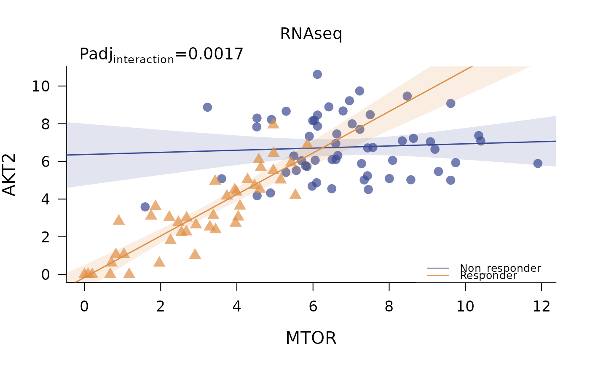

Plot differential regressions for any target-target pair in an omic dataset
Usage
plot_regressions(
deggs_object,
assayDataName = 1,
gene_A,
gene_B,
title = NULL,
legend_position = "topright"
)Arguments
- deggs_object
an object of class
deggsgenerated byget_diffNetworks- assayDataName
name of the assayData of interest. If an unnamed list of data was given to
get_diffNetworks, the assayDataName here will be the number indicating the position of the data in the assayDataList provided before (i.e. if the user wants to plot a differential interaction observed in the transcriptomic data, which was second in the list, then assayDataName must be 2, if only one data table was provided assayDataName must be 1). Default 1.- gene_A
character. Name of the first target (gene, protein, metabolite, etc.)
- gene_B
character. Name of the second target (gene, protein, metabolite, etc.)
- title
plot title. If NULL (default), the name of the assayData will be used. Use empty character "" for no title.
- legend_position
position of the legend in the plot. It can be specified by keyword or in any parameter accepted by
xy.coords(defalut "topright")
Value
base graphics plot showing differential regressions across categories. The p value of the interaction term of gene A ~ gene B \* category is reported on top.
Examples
data("synthetic_metadata")
data("synthetic_rnaseqData")
data("synthetic_proteomicData")
data("synthetic_OlinkData")
assayData_list <- list("RNAseq" = synthetic_rnaseqData,
"Proteomics" = synthetic_proteomicData,
"Olink" = synthetic_OlinkData)
deggs_object <- get_diffNetworks(assayData = assayData_list,
metadata = synthetic_metadata,
category_variable = "response",
regression_method = "lm",
padj_method = "bonferroni",
verbose = FALSE,
show_progressBar = FALSE,
cores = 1)
plot_regressions(deggs_object,
assayDataName = "RNAseq",
gene_A = "MTOR",
gene_B = "AKT2",
legend_position = "bottomright")
